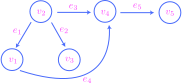
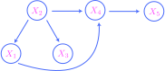
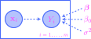
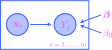

11. Probabilistic models#
THIS CHAPTER IS CURRENTLY UNDER CONSTRUCTION!!!
11.1. First examples#
11.1.1. Head-to-tail nodes#
11.1.2. Tail-to-tail nodes#
11.1.3. Head-to-head nodes#
11.2. DAGs and PGMs#
At the most basic level, a directed graph \(G\) consists of two sets \(V\) and \(E\) of vertices and edges. The vertices are visualized as nodes, and the edges are arrows that run between the nodes. For example, consider the following graph:
{kind=link}
This graph consists of five vertices and five edges:
Notice that this graph is acyclic, which means that beginning at any given node, there is no (directed) path along the edges that returns to the original node. Thus, our graph \(G\) is an example of a directed acyclic graph, or DAG for short.
If there is a directed edge \(v_i \to v_j\) from a node \(v_i\) to a node \(v_j\), then \(v_i\) is said to be a parent of \(v_j\) and \(v_j\) is called a child of \(v_i\). For example, in our graph \(G\) above, the set of parents of \(v_4\) is \(\{v_1,v_2\}\), while the set of children of \(v_4\) is \(\{v_5\}\).
More generally, if there exists a directed path from \(v_i\) to \(v_j\) of any length, say
then \(v_j\) is called a descendant of \(v_i\). Thus, \(v_j\) is a child of \(v_i\) if there exists a directed path of length \(1\). In our graph above, the node \(v_5\) is a descendant of \(v_2\) which is not a child.
The vertex set of a graph can be any set whatsoever; in particular, we can take the vertex set of a DAG to be a set of random variables \(V = \{X_1,\ldots,X_n\}\). In our running example from the previous section, we might imagine that our graph has vertex set consisting of five random variables:
{kind=link}
I have omitted the edge labels for clarity, which I will continue to do in what follows.
Definition 11.1
Let \(V = \{X_1,\ldots,X_n\}\) be a collection of random variables, \(G\) a graph with vertex set \(V\), and \(p(x_1,\ldots,x_n)\) the joint probability function. We shall say that \(G\) represents the joint probability distribution, or that \(p\) factors over \(G\), if
Note that I am intentionally confusing an observed value \(x_i\) of a random variable \(X_i\) with the random variable itself, so that the “parents of \(x_i\)” actually makes sense.
In our running example, the graph \(G\) represents the joint probability distribution provided that
Notice that the random variable \(X_2\) has no parents in \(G\), so that the marginal probability function \(p(x_2)\) serves in place of a conditional distribution.
11.3. Independence and \(d\)-separation#
11.4. More examples#
11.4.1. Linear regression#
The goal of linear regression is to model an IID random sample \(\{Y^{(i)}\}_{i=1}^m\) of normally distributed variables based on a sequence \(\{\mathbf{x}^{(i)}\}_{i=1}^n \subset \mathbb{R}^n\) of deterministic vectors. Here are the precise details:
Definition 11.2
A linear regression model is a probabilistic graphical model whose underlying graph is of the form
{kind=link}
The components of the parameter vector \(\boldsymbol\beta=(\beta_0,\beta_1,\ldots,\beta_n)\) may be any real numbers, while \(\sigma^2\) must be positive (in particular, not zero). For each \(i=1,\ldots,m\), we have
where
The (components of the) vectors \(\{x^{(i)}\}\) are referred to as the predictors, regressors, explanatory variables, or independent variables, while the random variables \(\{Y^{(i)}\}\) are called the response variables or the dependent variables. In the case that \(n=1\), so that the predictors are real numbers, the model is called a simple linear regression model; otherwise, it is called a multiple linear regression model.
It follows that the joint density function of a linear regression model factors as
Note that
and so a linear regression model assumes (among other things) that the means of the response variables are linearly related to the regressors through the function
The parameter \(\beta_0\) is often called the intercept coefficient, while the other \(\beta_j\)’s (for \(j>0\)) are called slope coefficients since they are exactly the (infinitesimal) slopes:
The line (11.1) is often called the regression line of the model, and it is often displayed in a scatter plot with observed data. For example, suppose we consider the Ames housing data from the third programming assignment. In this dataset, we have two columns of observations on price (measured in thousands of US dollars) and area (measured in square feet):
Show code cell source
import pandas as pd
url = 'https://raw.githubusercontent.com/jmyers7/stats-book-materials/main/data/data-3-1.csv'
df = pd.read_csv(url, usecols=['area', 'price'])
df
| area | price | |
|---|---|---|
| 0 | 1656 | 215.0 |
| 1 | 896 | 105.0 |
| 2 | 1329 | 172.0 |
| 3 | 2110 | 244.0 |
| 4 | 1629 | 189.9 |
| ... | ... | ... |
| 2925 | 1003 | 142.5 |
| 2926 | 902 | 131.0 |
| 2927 | 970 | 132.0 |
| 2928 | 1389 | 170.0 |
| 2929 | 2000 | 188.0 |
2930 rows × 2 columns
We might believe that the price observations \(y^{(1)},\ldots,y^{2{,}930}\) come from an IID random sample
that may be predicted by the area observations \(x^{(1)},\ldots,x^{(2{,}930)}\) through a simple linear regression model. Based on this dataset, as we will see below (in Section 11.6.2), it is possible to choose an “optimal” value for the parameter vector \(\boldsymbol\beta = (\beta_0,\beta_1)\) leading to a “best fit.” Using these values of \(\beta_0\) and \(\beta_1\), we may plot the regression line (11.1) along with the data in a scatter plot:
Show code cell source
import statsmodels.formula.api as smf
import numpy as np
import matplotlib.pyplot as plt
import matplotlib_inline.backend_inline
matplotlib_inline.backend_inline.set_matplotlib_formats('svg')
plt.style.use('../aux-files/custom_style_light.mplstyle')
magenta = '#FD46FC'
lr = smf.ols(formula='price ~ area', data=df).fit()
beta_0, beta_1 = lr.params
min_data = df['area'].min()
max_data = df['area'].max()
grid = np.linspace(min_data, max_data)
df.plot(kind='scatter', x='area', y='price', alpha=0.15)
plt.plot(grid, beta_0 + beta_1 * grid, color=magenta)
plt.show()
{kind=link}
In general, the random variables
in a linear regression model are called the error terms. Note then that
and \(\epsilon^{(i)} \sim \mathcal{N}\big( 0,\sigma^2\big)\) for each \(i=1,\ldots,m\). The assumption built into the linear regression model that the error terms all share the same variance is called homoscedasticity. If we have observed values \(y^{(1)},\ldots,y^{(m)}\), then the differences
are observed values of the error terms, where
are the predicted values of the \(y^{(i)}\)’s. The differences (11.2) are called the residuals of the observed values.
Based on the scatter plot above, it is apparent that the homoscedasticity assumption is violated in the Ames dataset. This is made even more apparent by plotting the residuals against the predictor variable:
Show code cell source
resid = lr.resid
plt.scatter(x=df['area'], y=resid, alpha=0.20)
plt.xlabel('area')
plt.ylabel('residuals')
plt.show()
{kind=link}
Indeed, the distributions of the residuals appear to widen as the area variable increases.
As with the parameter vector \(\boldsymbol{\beta}\), it is also possible to estimate an “optimal” value of the variance \(\sigma^2\) in the linear regression model for the Ames dataset. Given these parameters, we may then generate new datasets by sampling from the normal distributions
for each \(i=1,2,\ldots,2{,}930\). It is interesting to produce scatter plots of a few generated datasets and compare their shape to the real dataset above:
Show code cell source
import scipy as sp
from itertools import product
np.random.seed(42)
sigma = np.sqrt(lr.scale)
y_hat = lr.predict()
_, axes = plt.subplots(nrows=2, ncols=2, figsize=(8, 6), sharex=True, sharey=True)
for i, j in product(range(2), range(2)):
y_gen = sp.stats.norm(loc=y_hat, scale=sigma).rvs(2930)
df_gen = pd.DataFrame({'area': df['area'], 'price': y_gen})
df_gen.plot(kind='scatter', x='area', y='price', alpha=0.15, ax=axes[i, j])
axes[i, j].plot(grid, beta_0 + beta_1 * grid, color=magenta)
axes[0, 0].set_title(f'generated dataset 1')
axes[0, 1].set_title(f'generated dataset 2')
axes[1, 0].set_title(f'generated dataset 3')
axes[1, 1].set_title(f'generated dataset 4')
plt.tight_layout()

The lines in these plots are copies of the original regression line. The residuals for these generated datasets look as follows:
Show code cell source
import scipy as sp
from itertools import product
np.random.seed(42)
_, axes = plt.subplots(nrows=2, ncols=2, figsize=(8, 6), sharex=True, sharey=True)
for i, j in product(range(2), range(2)):
y_gen = sp.stats.norm(loc=y_hat, scale=sigma).rvs(2930)
df_gen = pd.DataFrame({'area': df['area'], 'price': y_gen})
y_hat = lr.predict(df_gen)
resid = y_gen - y_hat
axes[i, j].scatter(x=df['area'], y=resid, alpha=0.20)
axes[i, j].set_xlabel('area')
axes[i, j].set_ylabel('residuals')
axes[0, 0].set_title(f'generated dataset 1')
axes[0, 1].set_title(f'generated dataset 2')
axes[1, 0].set_title(f'generated dataset 3')
axes[1, 1].set_title(f'generated dataset 4')
plt.tight_layout()
{kind=link}
This is a form of model checking: By generating new data from the model and comparing to the original data, we are checking to see how well our model matches the real data.
11.4.2. Logistic regression#
The only difference between the linear regression models studied in the previous section and the logistic regression models studied in this one are the assumed forms of distributions of the IID random sample.
Definition 11.3
A logistic regression model is a probabilistic graphical model whose underlying graph is of the form
{kind=link}
The deterministic vectors \(\mathbf{x}^{(i)} = \big(x_1^{(i)},\ldots,x_n^{(n)}\big)\) have no restrictions on their componenets, as well as the parameter vector \(\boldsymbol\beta=(\beta_0,\beta_1,\ldots,\beta_n)\). For each \(i=1,\ldots,m\), we have
where
and \(\sigma: \mathbb{R} \to \mathbb{R}\) is the logistic function (or sigmoid function) defined as
It follows that the joint density function of a logistic regression model factors as